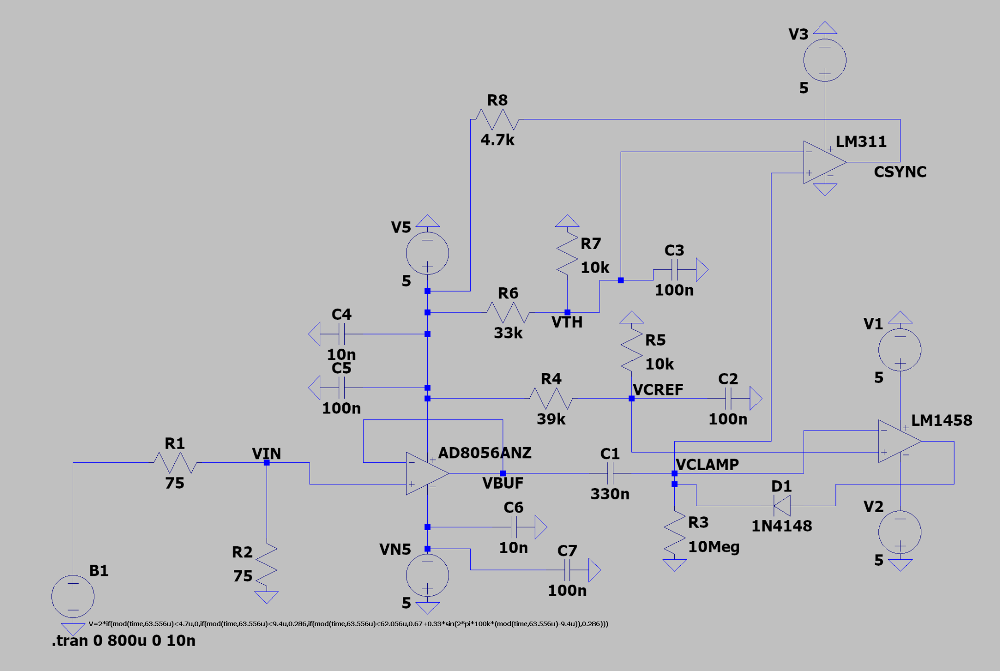
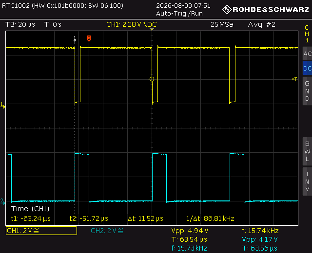
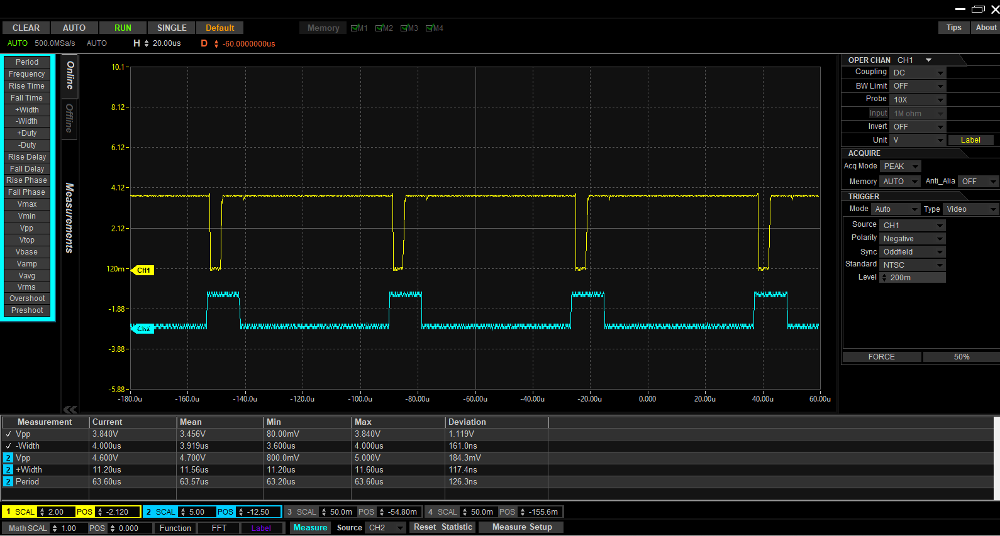
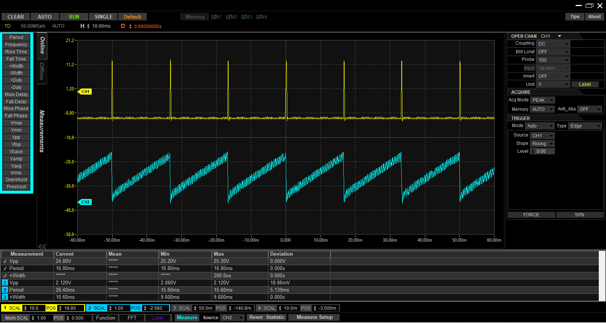

Analog circuit design
Designed and debugged video input conditioning, timing extraction, X/Y ramp generation, and brightness-modulation signal paths.
Designed and bench-tested analog stages that decode NTSC composite-video timing and luminance into synchronization, horizontal/vertical deflection, and intensity-control signals for oscilloscope display.

Composite video multiplexes luminance and line/frame synchronization. The circuit separates these functions to drive oscilloscope X/Y deflection and Z-axis brightness modulation.
The signal chain combines input conditioning, sync separation, horizontal and vertical sweep generators, and luminance-derived intensity control. LTspice simulations and bench oscilloscope traces were used to verify timing and signal integrity.
Developed and evaluated analog circuit stages, checked intermediate waveform timing, and isolated interstage loading, grounding, and supply problems during integration.
Designed and debugged video input conditioning, timing extraction, X/Y ramp generation, and brightness-modulation signal paths.
Used LTspice transient analysis to examine pulse timing, ramp linearity, operating-point voltages, and expected interstage signal levels.
Measured synchronization pulses, blanking intervals, and deflection ramps with an oscilloscope and compared traces against the intended timing sequence.
Brought up individual stages and traced signal propagation to isolate amplitude, timing, and interface faults before full-chain integration.
Distributed ±12 V analog rails and derived regulated ±5 V supplies using 7805/7905 regulators; addressed local decoupling, common-reference grounding, and noise coupling between timing and video-processing stages.
Bench testing used controlled signal sources and video input to inspect horizontal sync, vertical timing, blanking intervals, and ramp-generator waveforms.



Subsystem-level tests exposed how supply regulation, grounding, and interstage loading affect synchronization and sweep accuracy; simulation results were compared with measured waveforms during bring-up.
NTSC composite video · ±12 V and regulated ±5 V rails · 7805/7905 regulation · decoupling and grounding · sync separation · sweep generation · luminance processing